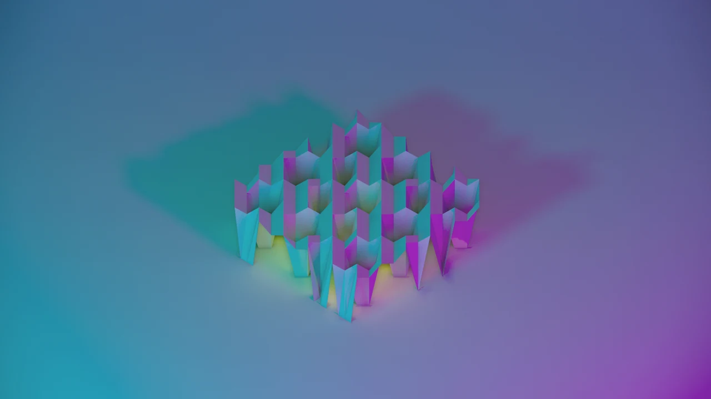
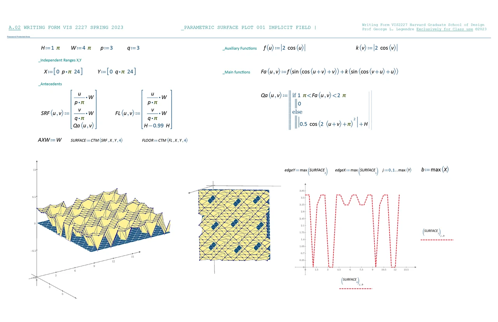
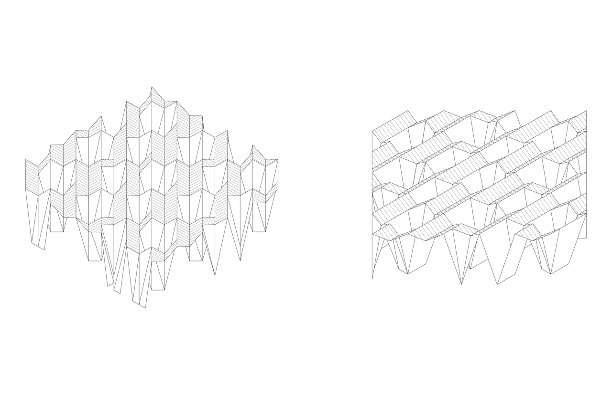
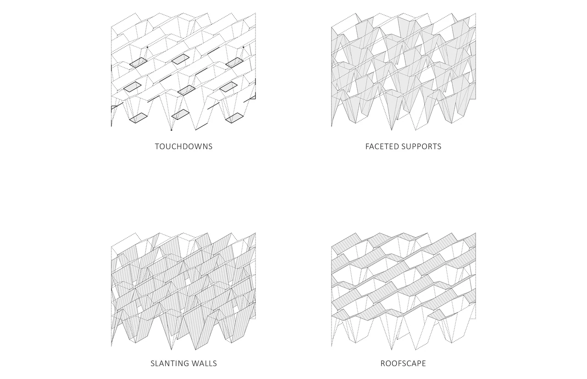
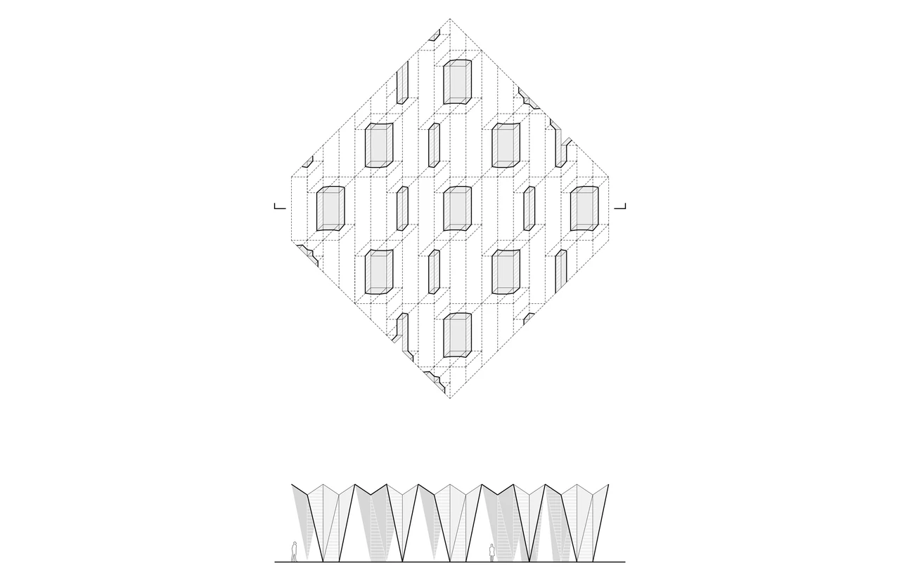
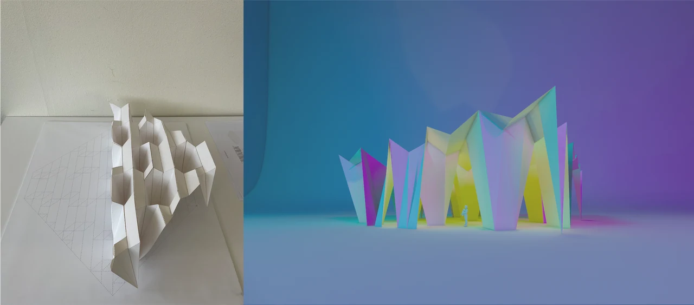

COM–γ: Form Transformations
Instructor: George L. LegendreCollaborative Project (This project was developed through a fully collaborative two-person workflow. All conceptual and technical decisions were made jointly through continuous dialogue, iteration, and testing.)
Teammate: Jing Liao
Tools & Technologies: Custom geometric transformation scripts, rule-based iteration system, parametric operations, Mathematica / parametric equation modeling, implicit surface evaluation, mesh extraction and geometric sampling
Introduction
Form Transformations investigates how architectural form can emerge directly from mathematical fields rather than from predefined composition. Beginning with an implicit surface constructed through trigonometric functions, thresholds, and parametric ranges, the project treats geometry as the measurable outcome of computational behavior. Oscillation, interference, and gradient variation generate a surface whose organization is neither arbitrary nor symbolic but embedded within the logic of the field itself.
From this surface, the study extracts a spectrum of architectural possibilities—touchdown points, faceted supports, slanting walls, and roof-like ridges—revealing how a single generative mechanism can yield multiple typologies. Through iterative translation into drawings, physical models, and spatial renderings, the project demonstrates how computation becomes not a tool for representation but a driver of spatial thinking. Form is understood as a consequence of rules, a continuous negotiation between mathematical structure and architectural interpretation.

Parametric Field Definition
The project begins with the construction of a parametric implicit field defined through trigonometric functions, independent ranges, and a layered system of antecedent operations. These equations establish the underlying logic of the surface—embedding oscillation, thresholds, and directional shifts into the coordinate space. The resulting mathematical field provides a generative substrate where geometric behavior emerges directly from rule-based computation rather than compositional intent.

Surface Behavior & Geometric Response
The first translation of the implicit field into geometry reveals a folded landscape of peaks and troughs produced by the oscillatory components of the equation. The adjacent elevation plots and edge diagrams show how the field organizes itself across both axes, creating zones of intensification and attenuation. At this stage, the system behaves purely as a computational construct: a surface whose form is dictated by local evaluations of the parametric field.



Typological Transformations: Touchdowns, Supports, Walls, Roofs
By selectively sampling and recomposing portions of the surface, the field begins to generate architectural typologies.
-
Touchdowns highlight conditions where the surface meets a ground plane to form anchor points.
-
Faceted Supports emerge from vertical extrusions of steep regions of the field.
-
Slanting Walls reinterpret gradients as planar, inhabitable boundaries.
-
Roofscape studies treat upper ridges as interconnected canopies.
The plan drawing captures the surface as a tessellated field of facets, each responding to the underlying parametric oscillation. The distribution of openings and solid regions follows the structural rhythm of the field, creating a spatial pattern legible both in plan and section. The section cut reveals the full vertical expression of the system—an alternating register of slanted planes that suggests enclosure, structure, and inhabitable volume simultaneously.

Physical Translation & Atmospheric Projection
The computational system is tested across two modes of materialization.
On the left, a paper model translates the faceted geometry into a tangible structural logic, demonstrating how the surface folds into volumetric cells capable of standing and connecting.
On the right, a rendered spatial study reimagines the geometry as an inhabitable environment defined by shifting chromatic light. The forms retain their computational origin yet acquire architectural presence—becoming columns, partitions, or luminous enclosures depending on scale and interpretation.